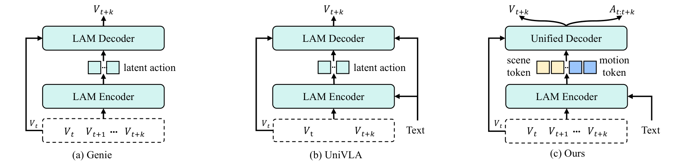
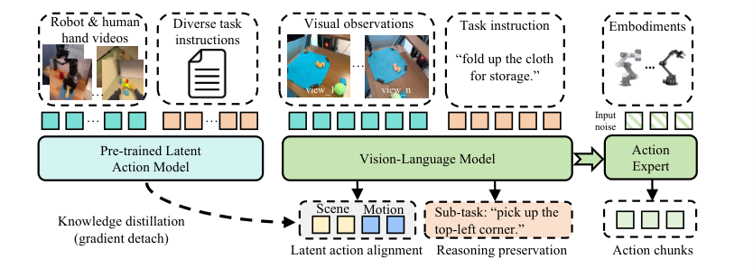
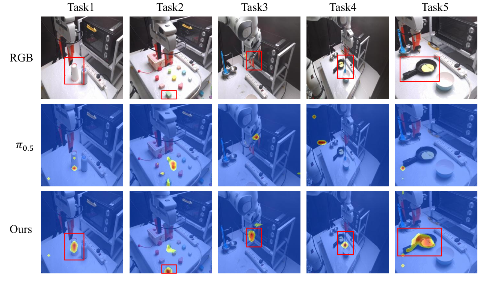
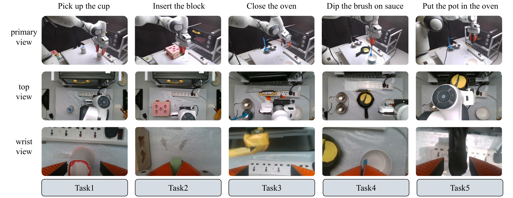

LatBot: Distilling Universal Latent Actions for Vision-Language-Action Models
1. 论文速览与证据链
一句话贡献
LatBot 以未来帧重建和动作序列预测联合监督 latent action，并将 motion/scene token 解耦后蒸馏到 VLA，在 SIMPLER、LIBERO 与少样本真实 Franka 任务上提升迁移。
元数据与阅读定位
| 技术类型 | Universal latent action distillation |
|---|---|
| 关键词 | LatBot、universal latent action、motion token、scene token、EgoDex、reasoning preservation、SIMPLER、LIBERO |
| 开源情况 | 项目页公开；训练代码和权重以作者页面发布状态为准 |
| 适合程度 | 很高：展示如何把人手与机器人视频中的 latent action 蒸馏进 VLA |
从哪里开始读
LAM 接收任务指令和多帧视频，统一 decoder 同时预测未来图像与动作序列；latent token 被拆成 motion 与 scene 两组。第二阶段把 LAM 表示蒸馏到 VLM，并加入 reasoning preservation loss；最后训练 action expert，把 latent 输出映射到末端位姿和 gripper。 阅读时先确认中间表示是否在部署端运行，再用主结果和消融判断它究竟改善了感知、动态预测还是动作生成。
图表证据链
| # | 原始图 | 支持的主张与边界 |
|---|---|---|
| 1 | 方法定位与总体比较 | 图中将纯重建 latent action 与加入物理先验、token 解耦的 LatBot 对照，明确改动发生在表示学习和知识蒸馏两处。 |
| 2 | latent action 蒸馏流程 | LAM 教师输出动作相关 token，学生 VLM 同时接受 alignment 与 reasoning preservation；该图解释为何蒸馏不应破坏语言能力。 |
| 3 | DLA 与 UAD 的作用 | 消融可视化把 motion/scene 解耦和动作先验分开，支持两类约束互补，而非同一正则的重复。 |
| 4 | 真实 Franka 少样本任务 | 连续帧展示薄物体抓取与插入等任务，证明 action head 可落地；但场景和平台数量仍有限。 |
2. 问题与动机
问题定义
只用像素重建学习 latent action 容易把相机、背景和照明变化当成动作，同时不同机器人 embodiment 的物理动作空间不兼容。LatBot 寻找一种与具体关节定义无关、却保留距离、朝向和抓取意图的通用表示，使人类视频也能为机器人策略提供监督。
现有路线为何不足
LAPA/UniVLA 等方法证明无动作视频可用于 VLA 预训练，但 latent code 往往由重建目标隐式决定。LatBot 引入带物理标注的人手 EgoDex 与机器人数据，把动作预测作为额外约束，并通过 distillation 而非直接替换 VLM 表征来保留语言推理。
作者的解题假设
LatBot 以未来帧重建和动作序列预测联合监督 latent action，并将 motion/scene token 解耦后蒸馏到 VLA，在 SIMPLER、LIBERO 与少样本真实 Franka 任务上提升迁移。 该假设只有在统一骨干、数据和评测下仍带来增益时才成立。
4. 方法、表示与训练
端到端信息流
LAM 接收任务指令和多帧视频，统一 decoder 同时预测未来图像与动作序列；latent token 被拆成 motion 与 scene 两组。第二阶段把 LAM 表示蒸馏到 VLM，并加入 reasoning preservation loss；最后训练 action expert，把 latent 输出映射到末端位姿和 gripper。
核心表示
UAD 使用 EgoDex 的双手 3D 位置、6D 朝向与指尖位置，把可执行几何先验注入 latent space；DLA 再显式区分主体运动和环境变化。两者组合的意义是让 token 既跨 embodiment，又不会因背景变化失去动作语义。
训练阶段与目标
预训练混合 OXE、AgiBoT 与 EgoDex，共约一百万视频 episode；LAM 与蒸馏分别在 16×A100 40GB 上训练 14 天和 7 天。动作损失将末端平移/旋转 MSE 与 gripper BCE 合并，reasoning loss 权重默认 0.5。
推理与部署路径
部署时 VLA 先产生经 distillation 对齐的动作相关特征，再由 action expert 输出执行轨迹；未来帧 decoder 主要服务预训练。该设计避免在线运行大视频生成器，但仍依赖蒸馏质量和具体 embodiment 的动作头。
方法定位与总体比较

latent action 蒸馏流程

5. 实验、结果与消融
数据集、任务与协议
仿真评测包括 Google Robot/WidowX 的 SIMPLER 与四套 LIBERO；真实 Franka 任务只收集每任务 10 条轨迹，覆盖薄刷抓取、插块等精细动作。对比包含 π0/π0.5、UniVLA、MemoryVLA、SpatialVLA 等。
主要定量结果
SIMPLER Google visual matching 平均成功率 78.0%，variant aggregation 为 70.1%；WidowX 平均 87.5%。LIBERO 四套平均 98.0%，高于 π0.5 的 96.9% 与 UniVLA 的 95.2%。这些结果表明物理先验和解耦 token 对跨平台迁移有帮助。
消融与因果解释
论文分别移除 DLA 与 UAD：DLA 提供结构化运动因素，UAD 提供真实几何动作先验，组合在多任务上最稳定。真实少样本成功并不等于完全零样本，因为 action expert 仍需每个新机器人上的少量动作轨迹。
证据没有覆盖什么
从当前评测覆盖看，跨 embodiment 仍通过最终动作头完成，通用 token 是否能迁移到腿式机器人或驾驶未被验证。人手标注质量和数据分布可能贡献了大量收益；真实实验任务数较少，无法证明长时域规划或失败恢复。
DLA 与 UAD 的作用

真实 Franka 少样本任务

6. 复现路径与工程风险
最小可行复现
复现至少需要 OXE/AgiBoT 视频、EgoDex 手部标注、LAM 统一 decoder、蒸馏阶段和 embodiment action head。可先在 LIBERO 复刻 98.0% 趋势，再做 WidowX；完整一百万 episode 与 16×A100 周级训练是主要门槛。
验收标准
SIMPLER Google visual matching 平均成功率 78.0%，variant aggregation 为 70.1%；WidowX 平均 87.5%。LIBERO 四套平均 98.0%，高于 π0.5 的 96.9% 与 UniVLA 的 95.2%。这些结果表明物理先验和解耦 token 对跨平台迁移有帮助。 复现时至少应恢复相同方向的增益，并报告同一随机种子、数据规模和延迟预算。
复现风险清单
| 环节 | 具体风险 |
|---|---|
| 数据 | 需取得论文列出的训练数据、相同切分与时间同步；未公开数据必须单列。 |
| 模型 | 需固定视觉/VLM 骨干、tokenizer 与动作头，避免把模型规模差异误判为方法收益。 |
| 训练 | 按论文阶段顺序复现，并保留无 latent/world objective 的严格对照。 |
| 评测 | 同时复现主指标、消融和失败类型；开环结果不能替代闭环安全。 |
| 硬件 | 复现至少需要 OXE/AgiBoT 视频、EgoDex 手部标注、LAM 统一 decoder、蒸馏阶段和 embodiment action head。可先在 LIBERO 复刻 98.0% 趋势，再做 WidowX；完整一百万 episode 与 16×A100 周级训练是主要门槛。 |
7. 分析、局限与边界
最有价值的贡献
综合方法与实验证据，LatBot 以未来帧重建和动作序列预测联合监督 latent action，并将 motion/scene token 解耦后蒸馏到 VLA，在 SIMPLER、LIBERO 与少样本真实 Franka 任务上提升迁移。
作者结论的适用边界
将结论外推前需要保留以下边界：跨 embodiment 仍通过最终动作头完成，通用 token 是否能迁移到腿式机器人或驾驶未被验证。人手标注质量和数据分布可能贡献了大量收益；真实实验任务数较少，无法证明长时域规划或失败恢复。
可信的后续实验
可把 motion/scene 解耦用于驾驶：motion token 分成 ego 与 traffic-agent dynamics，scene token 表示照明和背景变化；再用轨迹、光流和地图约束替代手部几何监督，检查是否能减少 VLA 在相机扰动下的误判。
8. 组会问答与阅读结论
Q1. LatBot 的 universal 指什么？
A：指 latent action 不绑定某个机器人关节空间，可从人手和多机器人视频学习，再由下游动作头落地。
Q2. 为什么还要动作预测？
A：未来帧重建偏向外观；动作序列监督提供距离、方向和抓取状态等物理先验。
Q3. motion/scene 解耦解决什么？
A：减少环境变化混入主体主动运动表示，提高跨场景迁移。
Q4. 最强证据是什么？
A：LIBERO 98.0%、WidowX 87.5%，并在每任务 10 条真实轨迹下完成精细操作。
Q5. 它是否零样本控制新机器人？
A：不是；通用 latent 可迁移，但 action expert 仍需少量目标 embodiment 数据。
我的阅读笔记
结合本批论文的比较，我的后续关注点是：可把 motion/scene 解耦用于驾驶：motion token 分成 ego 与 traffic-agent dynamics，scene token 表示照明和背景变化；再用轨迹、光流和地图约束替代手部几何监督，检查是否能减少 VLA 在相机扰动下的误判。